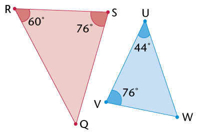
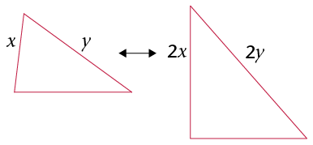

Meetkunde van 2d-figure

- \(\triangle\)ABC is 'n ________ driehoek, want ________
- \(\triangle\)EDF is 'n ________ driehoek, want ________
- \(\triangle\)GHI is 'n ________ driehoek, want ________
- \(\triangle\) .......... is ʼn skerphoekige gelykbenige driehoek, want........ en .........
- \(\triangle\) .......... is 'n reghoekige gelykbenige driehoek, want ......... en ........
- \(\triangle\) .......... is 'n stomphoekige gelykbenige driehoek, want ........... en ..........

|
Bewering |
Waar vir |
|
|
(a) |
Twee sye van die driehoek is gelyk. |
|
|
(b) |
Een hoek van die driehoek is stomp. |
|
|
(c) |
Twee hoeke van die driehoek is gelyk. |
|
|
(d) |
Al drie hoeke van die driehoek is gelyk aan 60\(^\circ\). |
|
|
(e) |
Die grootte van ʼn buitehoek is gelyk aan die som van die teenoorstaande binnehoeke. |
|
|
(f) |
Die langste sy van die driehoek is teenoor die grootste hoek. |
|
|
(g) |
Die som van die twee korter sye van die driehoek is groter as die lengte van die langste sy. |
|
|
(h) |
Die kwadraat van die lengte van een sy is gelyk aan die som van die kwadrate van die ander sye. |
|
|
(i) |
Die kwadraat van die lengte van een sy is groter as die som van die kwadrate van die ander sye. |
|
|
(j) |
Die som van die binnehoeke van die driehoek is 180\(^\circ\). |


|
Eienskappe |
Waar vir die volgende vierhoeke |
|||||
|
Vierkant |
Ruit |
Reghoek |
Parallelogram |
Vlieër |
Trapesium |
|
|
Ten minste een paar
teenoorstaande |
ja |
ja |
ja |
ja |
ja |
nee |
|
Albei pare
teenoorstaande |
||||||
|
Ten minste een paar
aangrensende hoeke is |
||||||
|
Al vier hoeke is gelyk. |
||||||
|
Enige twee
teenoorstaande sye is |
||||||
|
Twee aangrensende sye
is gelyk, en die |
||||||
|
Al vier sye is gelyk. |
||||||
|
Ten minste een paar
teenoorstaande |
||||||
|
Enige twee
teenoorstaande sye is |
||||||
|
Die twee hoeklyne is loodreg. |
||||||
|
Ten minste een hoeklyn
halveer die |
||||||
|
Die twee hoeklyne halveer mekaar. |
||||||
|
Die twee hoeklyne is gelyk. |
||||||
|
Ten minste een hoeklyn
halveer 'n |
||||||
|
Albei hoeklyne halveer
'n paar |
||||||
|
Die som van die binnehoeke is 360\(^\circ\). |
||||||
- Is al die eienskappe van 'n
vierkant ook die eienskappe van 'n ruit? Verduidelik.
- Is al die eienskappe van 'n ruit
ook die eienskappe van 'n vierkant?
Verduidelik
- Watter bewering is
waar?
'n Vierkant is 'n spesiale soort ruit. ___________
'n Ruit is 'n spesiale soort vierkant. ___________
- Is al die eienskappe van 'n
vierkant ook die eienskappe van 'n reghoek?
Verduidelik
- Is al die eienskappe van ʼn
reghoek ook die eienskappe van ʼn vierkant?
Verduidelik.
- Watter bewering is
waar?
'n Vierkant is ʼn spesiale soort reghoek. ___________
ʼn Reghoek is ʼn spesiale soort vierkant. ___________
- Is al die eienskappe van ʼn
parallelogram ook dié van ʼn reghoek?
Verduidelik.
- Is al die eienskappe van ʼn
reghoek ook dié van ʼn parallelogram?
Verduidelik.
- Watter bewering is
waar?
ʼn Reghoek is ʼn spesiale parallelogram. ___________
ʼn Parallelogram is ʼn spesiale reghoek. ___________


As twee driehoeke kongruent is, is elke sy in die een driehoek gelyk aan elke ooreenstemmende sy in die ander driehoek. Elke hoek in die een driehoek is ook gelyk aan elke ooreenstemmende hoek in die ander driehoek.
 \(\equiv\)
\(\triangle\)XYZ.
\(\equiv\)
\(\triangle\)XYZ.Kongruensiesimbool
\(\equiv\) beteken "is kongruent aan"
Die voorwaardes vir kongruensie:
- SSS (alle ooreenstemmende sye is gelyk)
- SHS (twee ooreenstemmende sye en die ingeslote hoek is gelyk)
- HHS (twee ooreenstemmende hoeke en enige ooreenstemmende sy is gelyk)
- 90°SS (albei driehoeke het ʼn 90°-hoek en het skuinssye gelyk en een ander sy gelyk).


- Elke bewering wat jy maak moet 'n rede hê.
- Jy moet drie bewerings gee om te bewys dat enige twee driehoeke kongruent is.
- Gee die rede vir kongruensie.

Bewering
Rede
In \(\triangle\)ABD en \(\triangle\)CED:
1) \(AD = DC\)
2) \(A\hat{D}B = C\hat{D}E\)
3) \(B\hat{A}D = E\hat{C}D\)
\(\therefore\) \(\triangle\)ABD \(\equiv\) \(\triangle\)CED
Gegee
Regoorst. \(\angle\)e
Verw. \(\angle\)s (AB\(||\) EC)
HHS
|
|
Bewering |
Rede |

|
|
Bewering |
Rede |

|
|
Bewering |
Rede |

|
|
Bewering |
Rede |


- Gebruik 'n gradeboog om die hoeke in elke
driehoek hier bo te meet.
Voltooi dan die tabel hier onder.
Hoek
Hoek
Wat sien jy raak?
\(\hat{B} =\quad\)
\(\hat{D} =\)
\(\hat{A} =\)
\(\hat{E} =\)
\(\hat{C} =\)
\(\hat{F} =\quad\)
- Wat kan jy oor die groottes van
die hoeke in gelykvormige driehoeke sê?
-
Gebruik 'n liniaal om die
lengtes van die sye in elke driehoek in vraag 1 te meet.
Voltooi dan die tabel hier onder
Lengte (cm)
Lengte (cm)
Verhouding
BA =
DE =
BA : DE = \(\quad\) = \(1 : 1\frac{1}{3}\)
BC =
DF =
BC : DF = \(\quad\) = \(\quad\)
CA =
FE =
CA : FE = \(\quad\) = \(\quad\)
- Wat kan jy oor die verband tussen die sye in gelykvormige
driehoeke sê?
Onthou:
Jy lees 'n verhouding soos byvoorbeeld 2 : 1 as "twee tot een".
Die volgende notasie wys dat die driehoeke gelykvormig is: \(\triangle\)BAC \(|||\) \(\triangle\)DEF. Waarom dink jy skryf ons die eerste driehoek as \(\triangle\)BAC en nie as \(\triangle\)ABC nie?
Die eienskappe van gelykvormige driehoeke:
- Die ooreenstemmende hoeke is gelyk.
- Die ooreenstemmende sye is in dieselfde verhouding tot mekaar.
As \(\triangle\)XYZ en \(\triangle\)PQR gelykvormig is, skryf ons: \(\triangle\)XYZ \(|||\) \(\triangle\)PQR.
Soos vir die notasie van kongruente figure, dui die volgorde van die letters in die notasie van gelykvormige driehoeke aan watter hoeke en sye gelyk is. Vir \(\triangle\)XYZ \(|||\) \(\triangle\)PQR:
Hoeke: \(\hat{X} = \hat{P}\) en \(\hat{Y} = \hat{Q}\) en \(\hat{Z} = \hat{R}\)
Syes: \(\text{X}\)\(\text{Y}\):\(\text{P}\)\(\text{Q}=\text{X}\)\(\text{Z}\): \(\text{P}\)\(\text{R}=\text{Y}\)\(\text{Z}\):\(\text{Q}\)\(\text{R}\)
As die driehoeke se hoekpunte in 'n ander volgorde geskryf word, sal die bewerings hier bo onwaar wees
-

-

-

-

Konstrueer die driehoeke in (a) tot (d) met 'n liniaal en gradeboog. Gebruik jou kennis van gelykvormigheid om die tweede driehoek in elke vraag te teken. Dui die groottes van die ooreenstemmende sye en hoeke op die tweede driehoek aan.
- In \(\triangle\)EFG, \(\hat{G}= 75^\circ\), EG = 4 cm en GF = 5 cm. \(\triangle\)ABC is ʼn vergroting van \(\triangle\)EFG, met sy sye drie keer langer.
- In \(\triangle\)MNO, \(\hat{M}= 45^\circ\), \(\hat{N}= 30^\circ\) en MN = 5 cm. \(\triangle\)PQR is gelykvormig aan \(\triangle\)MNO. Die sye van \(\triangle\)MNO en die sye van \(\triangle\)PQR is in die verhouding 1 : 3.
- \(\triangle\)RST is 'n gelykbenige driehoek. \(\hat{R}= 40^\circ\), RS is 10 cm en RS = RT. \(\triangle\)VWX is gelykvormig aan \(\triangle\)RST. Die sye van \(\triangle\)RST en die sye van \(\triangle\)VWX is in die verhouding 1:\(\frac{1}{2}\).
- \(\triangle\)KLM is reghoekig by \(\hat{L}\), LM is 7 cm en die skuinssy is 12 cm. \(\triangle\)XYZ is gelykvormig aan \(\triangle\)KLM en sy sye se lengtes is ʼn derde van \(\triangle\)KLM s'n.
Watter van die volgende is minimum voorwaardes vir gelykvormige driehoeke?
- Twee hoeke in een
driehoek is gelyk aan twee hoeke in 'n
ander driehoek.
- Twee sye van een
driehoek is in dieselfde verhouding tot
mekaar as twee sye in 'n ander
driehoek.

- Twee sye van een
driehoek is in dieselfde verhouding tot
mekaar as twee sye van 'n ander driehoek,
en die ingeslote hoek is gelyk aan die hoek
tussen die ooreenstemmende sye.
- Twee sye van een
driehoek is in dieselfde verhouding as twee
sye van 'n ander driehoek, en een hoek
wat nie tussen die
twee sye is nie, is
gelyk aan die ooreenstemmende hoek in
die ander driehoek

Ewewydige lyne sny mekaar nooit nie. Twee lyne is ewewydig aan mekaar as die afstand tussen hulle dieselfde langs die hele lengte van die lyne is.

Voltooi die volgende bewys dat \(\triangle\)QRU \(|||\) \(\triangle\)TSU:
|
Bewering |
Rede |
|
\(R\hat{Q}T = Q\hat{T}S\) \(Q\hat{R}S=\) = \(\therefore \triangle QRU|||\triangle TSU\) |
Verw. \(\angle\)s
Regoorst. \(\angle\)e Gelyke \(\angle\)e (of HHH) |

- Is die driehoeke in elke paar gelykvormig?
Verduidelik.
- Skryf pare gelykvormige
driehoeke neer.
- Is driehoeke soos dié altyd
gelykvormig? Verduidelik hoe jy seker kan wees sonder
om
elke moontlike driehoekpaar te meet.

|
|
Bewering |
Rede |

In die diagram hier regs is ST ʼn telefoonpaal en UV is ʼn vertikale stok. Die stok is 1m hoog en dit gooi ʼn skaduwee van 1,7 m (VW). Die telefoonpaal gooi ʼn skaduwee van 5,1 m (TW). Gebruik gelykvormige driehoeke om die hoogte van die telefoonpaal te bereken.

Hoeveel gelykvormige driehoeke is daar in die diagram? Verduidelik jou antwoord.

- Bewys dat \(\triangle\)BDE 'n gelyksydige driehoek
is.
- Bepaal al die kongruente
driehoeke. Gee 'n bewys vir elkeen.
- Noem soveel gelykvormige driehoeke
as wat jy kan. Verduidelik hoe jy weet hulle is
gelykvormig.
- Wat is die verhouding van die ooreenstemmende sye
van die
gelykvormige driehoeke tot mekaar?
- Bewys dat DE ewewydig is aan AC.
- Is DF ewewydig aan BC? Is EF ewewydig aan BA?
Verduidelik.